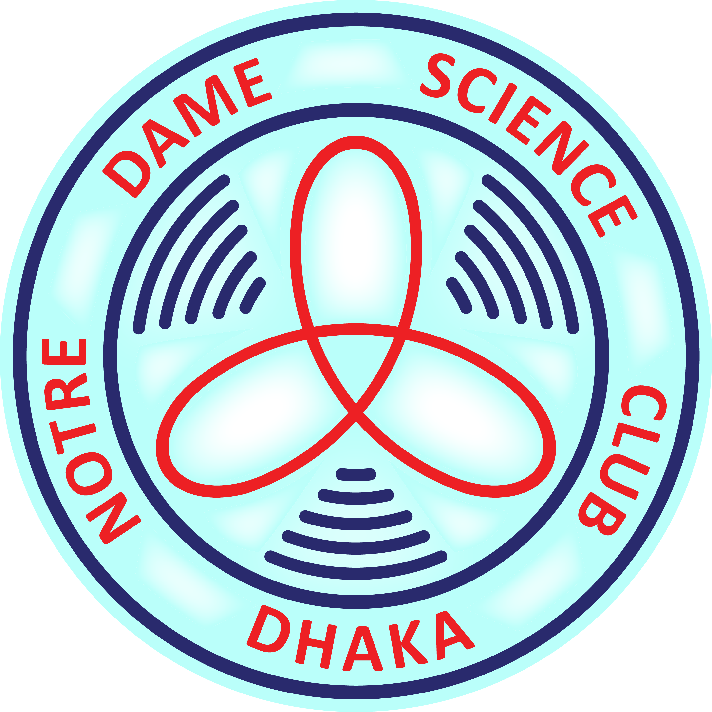

Notre Dame Science Club
Founded in 1955, Notre Dame Science Club stands as the first college-level science club in the Indian Subcontinent — a legacy of curiosity, innovation, and scientific excellence spanning over 70 years.

Notre Dame Science Club, also known as NDSC, the most promising, versatile, and eminent co-curricular activities club of Notre Dame College, began its inception in 1955 to ignite a passion for science among students. It is the pioneer of Notre Dame Science Club in the Sub-Continent. 'Science in Human Welfare' holding this noble motto, the eminent scientist Fr. R.W. Timm C.S.C, inaugurated the flag of NDSC.
The NDSC has a long history of inspiring its followers to rediscover their innate passion for science by serving as the country's oldest and most prestigious scientific club. NDSC gives the necessary guidelines, and it's the trailblazer in spreading scientific awareness among the people. Science, with its enigma, is expected to enlighten the pupil's hearts, being led by this magnificent sanctuary of knowledge. We foster a love of science and an eagerness to learn more about the world's mysteries, touch the untouched, and see the unseen. For the last few decades, NDSC has turned into the most prominent club to organize numerous science fairs, the ultimate platform which facilitates the demonstration of the science projects by the students. These festivals have stimulated the students' passion to a great extent to nourish their interest and quench the thirst to show their excellence.
Besides, the various Events and Competitions have also brought the very best of the people and have provided the momentum to research for advanced knowledge, other than the plain bookish knowledge. The official quiz teams of Notre Dame Science Club, the "NDC Blue" "NDC Green" & "NDC Gold", are the prestigious platforms for the quizzers; who are working relentlessly to uphold the glory of quizzing. The teams have won numerous prizes, bringing fame to our institution.
In addition, every year, distinguished members of Notre Dame Science Club compete in international science fairs and bring testimony to the institution. Notre Dame Science Club has earned profound respect in the international arena by the commendable performance of its fellows. Run by experienced and eloquent moderators, NDSC will be the pioneer in our science movement and will upgrade the noble cause of promoting science in every sphere of our life.